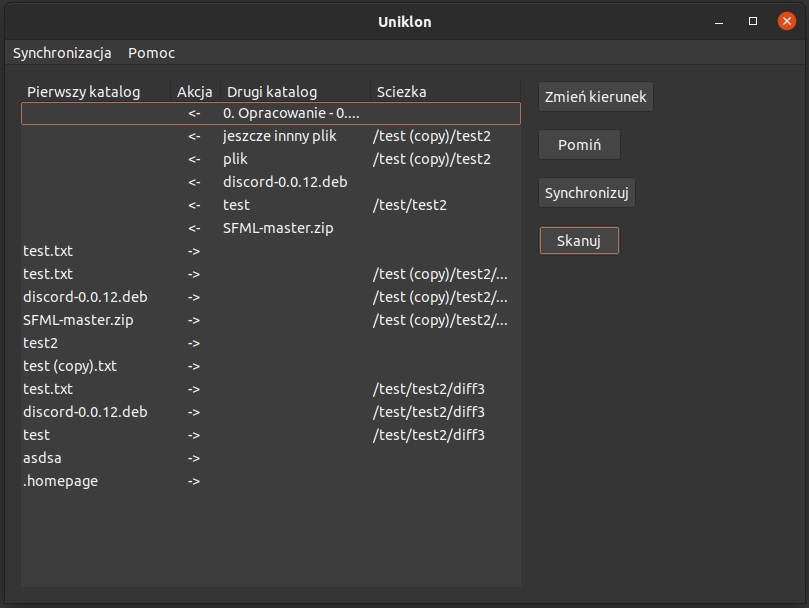
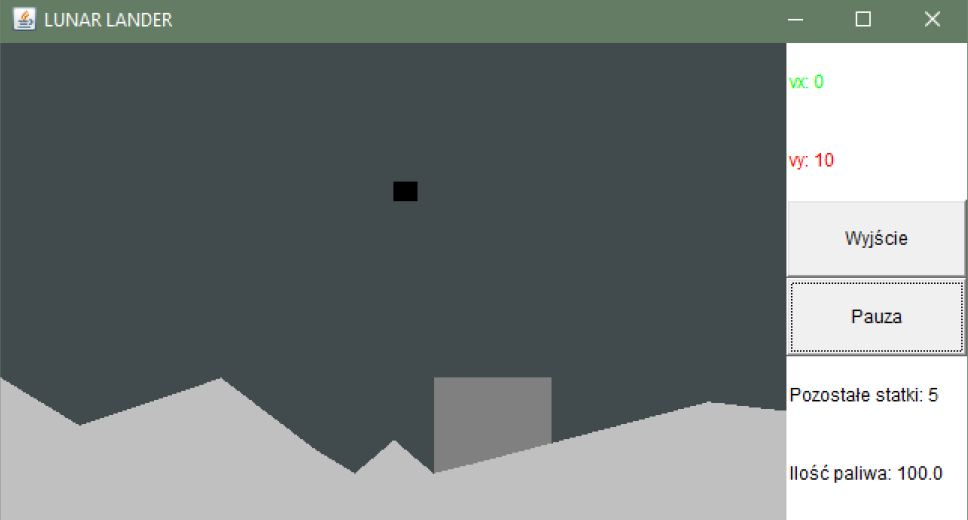
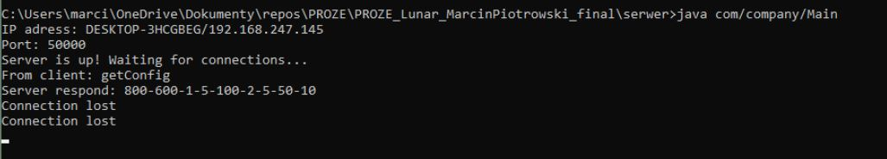
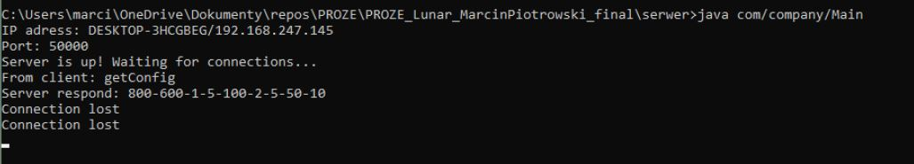
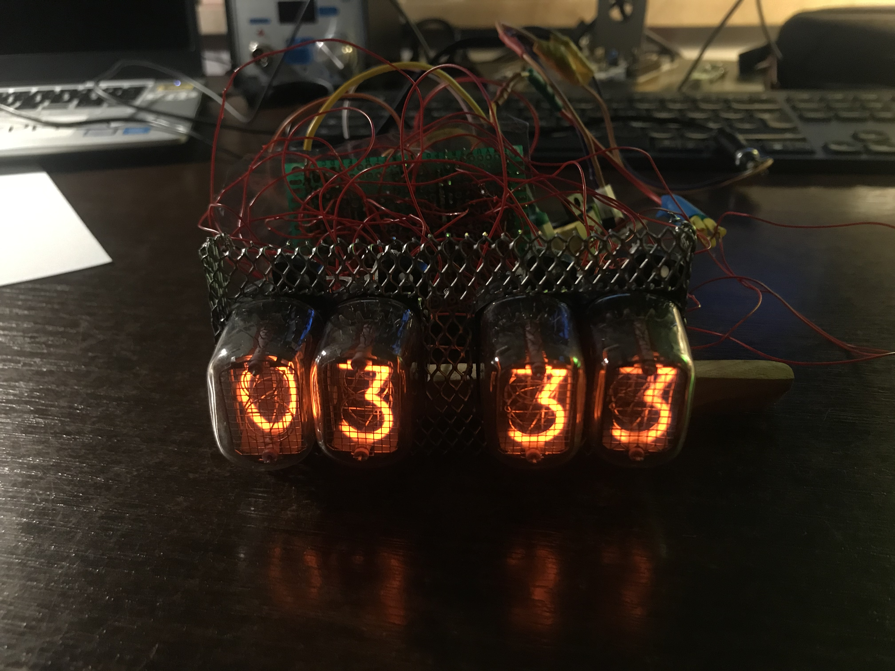

Projekty
Uniklon

Autorzy: Rafał Trybus i Marcin Piotrowski
Język programowania: c++17
Kod źródłowy: https://github.com/mpiotro4/Uniklon
Aplikacja służąca do synchronizacji katalgów zrobiona na wzór aplikacji Unison. Program porównuje dwa katalogi wskazane przez użytkownika i listuje pliki stanowiące różnicę. Użytkownik może zdecydować dla każdego pliku czy chce, aby został skopiowany do drugiego katalogu bądź został usunięty. Synchronizowane katalogi mogą znajdować się lokalnie w systemie, albo być dostępne za pośrednictwem SSH.
Prace nad projektem zostały rozpoczęte w październiku 2020 roku i rozwijany jest do dzisiaj.
Język programowania: c++17
Kod źródłowy: https://github.com/mpiotro4/Uniklon
Aplikacja służąca do synchronizacji katalgów zrobiona na wzór aplikacji Unison. Program porównuje dwa katalogi wskazane przez użytkownika i listuje pliki stanowiące różnicę. Użytkownik może zdecydować dla każdego pliku czy chce, aby został skopiowany do drugiego katalogu bądź został usunięty. Synchronizowane katalogi mogą znajdować się lokalnie w systemie, albo być dostępne za pośrednictwem SSH.
Prace nad projektem zostały rozpoczęte w październiku 2020 roku i rozwijany jest do dzisiaj.
Lunar Lander



Język programowania: Java SE w wersji 8
Kod źródłowy: https://github.com/mpiotro4/LunarLandrer
Prosta gra, której celem jest wylądowanie statkiem kosmicznym na powierzchni księżyca. Gra posiada lokalny tryb wieloosobwy. Osobna aplikacja serwera wysyła aplikacji klienta odczytane z plików konfiguracyjnych definicje poziomów, listę najlepszych wyników itd. Z drugiej strony klient wysyła serwerowi informacje o końcowym wyniku uzyskanym przez gracza. Możliwa jest również gra w trybie offline.
Celem projektu było przećwiczenie zagadnień obsługi zdarzeń GUI, współbierzności, parametryzacji i komunikacji sieciowej w architekturze klient-serwer.
Projekt rozwijany był przez około cztery miesiące do stycznia 2020 roku.
Kod źródłowy: https://github.com/mpiotro4/LunarLandrer
Prosta gra, której celem jest wylądowanie statkiem kosmicznym na powierzchni księżyca. Gra posiada lokalny tryb wieloosobwy. Osobna aplikacja serwera wysyła aplikacji klienta odczytane z plików konfiguracyjnych definicje poziomów, listę najlepszych wyników itd. Z drugiej strony klient wysyła serwerowi informacje o końcowym wyniku uzyskanym przez gracza. Możliwa jest również gra w trybie offline.
Celem projektu było przećwiczenie zagadnień obsługi zdarzeń GUI, współbierzności, parametryzacji i komunikacji sieciowej w architekturze klient-serwer.
Projekt rozwijany był przez około cztery miesiące do stycznia 2020 roku.
Zegar nixie (prototyp)

Kod źródłowy: https://github.com/mpiotro4/NixieClock
Prototyp zegara wyświetlającego godzine na lampach nixie ИН-12A. Sterowanie lampami odbywa się poprzez połączone szeregowo rejestry przesuwne i mikrokontroler. Lampy zasilane są napięciem 180V z przetwornicy step-up, która zasilana jest poprzez sieciowy adapter AC 12V. Do przenoszenia wysokiego napięcia użyto kluczy nasyconych z tranyzstorów bipolarnych przystosowanych do dużych napięć. Na obecną chwilę całość została wykonana na uniwersalnej płytce, w dalszych planach jest zaprojektowanie dedykowanej płytki pcb z wykorzystaniem elementów smd.
Prototyp zegara wyświetlającego godzine na lampach nixie ИН-12A. Sterowanie lampami odbywa się poprzez połączone szeregowo rejestry przesuwne i mikrokontroler. Lampy zasilane są napięciem 180V z przetwornicy step-up, która zasilana jest poprzez sieciowy adapter AC 12V. Do przenoszenia wysokiego napięcia użyto kluczy nasyconych z tranyzstorów bipolarnych przystosowanych do dużych napięć. Na obecną chwilę całość została wykonana na uniwersalnej płytce, w dalszych planach jest zaprojektowanie dedykowanej płytki pcb z wykorzystaniem elementów smd.